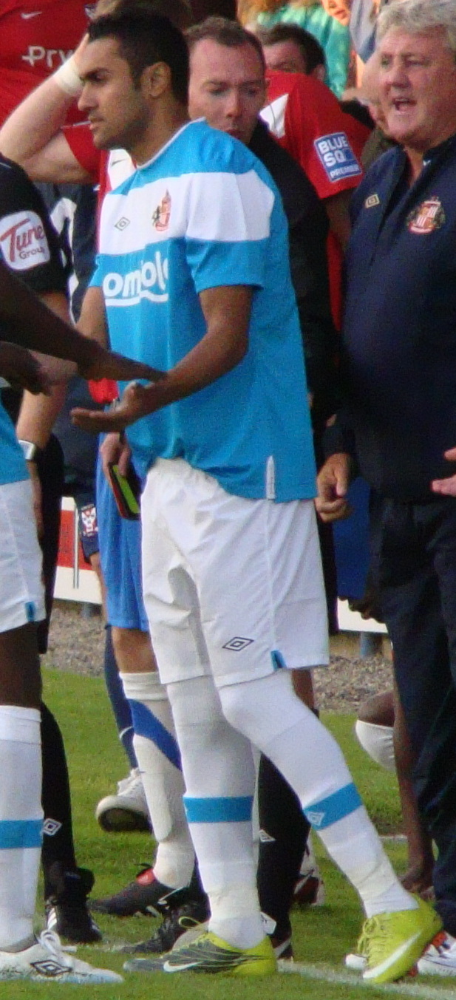

| Nombre | Posición | Edad | Bibliografía | Portada |
|---|---|---|---|---|
| Mohamed Salah | Extremo derecho | 33 |
Máxima figura del fútbol egipcio y estrella del Liverpool. Es referente de la selección nacional, reconocido por su velocidad, regate y goles decisivos. |
 |
| Mohamed Elneny | Mediocentro | 33 |
Mediocampista del Arsenal, conocido por su capacidad de recuperación y resistencia. Aporta experiencia a la selección egipcia en el mediocampo. |
|
| Trézéguet (Mahmoud Hassan) | Extremo izquierdo | 31 |
Jugador del Trabzonspor, clave en el ataque egipcio. Se caracteriza por su habilidad en el uno contra uno y capacidad goleadora. |
|
| Ahmed Hegazi | Defensa central | 34 |
Capitán en la defensa, con experiencia en Europa y Arabia Saudita. Destaca por su fortaleza aérea y liderazgo. |
|
| Ahmed Elmohamady | Lateral derecho | 37 |
Histórico defensor que jugó en la Premier League con Hull City y Aston Villa. Fue líder y referente de la selección egipcia. |
 |
| Amr Zaki | Delantero | 42 |
Recordado por su paso goleador en el Wigan Athletic de Inglaterra. Fue uno de los delanteros más potentes de su generación. |
|
| Mohamed Aboutrika | Mediapunta | 46 |
Considerado el mejor futbolista egipcio de la historia. Leyenda del Al Ahly, líder en la conquista de múltiples títulos continentales. |
|
| Hossam Hassan | Delantero | 59 |
Máximo goleador histórico de Egipto y referente absoluto en la década de los 90. Actualmente es entrenador. |
|
| Ahmed Hassan | Mediocampista | 49 |
Futbolista con más partidos internacionales en la historia (184). Fue pieza clave en la conquista de 4 Copas Africanas. |
|
| Essam El-Hadary | Portero | 52 |
Portero histórico de Egipto, conocido como "La Alta Muralla". Participó en 4 Copas del Mundo y múltiples Copas Africanas. |
|
| Mido (Ahmed Hossam) | Delantero | 42 |
Ex delantero del Ajax, Roma y Tottenham. Reconocido por su talento y carisma, actualmente es entrenador y comentarista. |
|
| Ramadan Sobhi | Extremo | 28 |
Con experiencia en la Premier League, hoy es figura en la liga egipcia. Representa la nueva generación del fútbol nacional. |